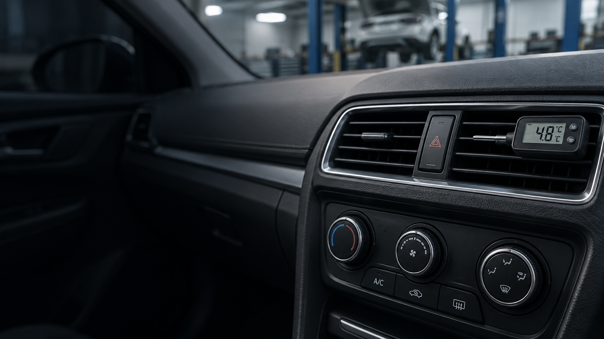

Air temperature
Say whether the air is warm, cool, inconsistent, or changes after the vehicle has been running.
A/C & heating in Bowling Green, OH
Weak A/C, no heat, strange airflow, or a defroster that is not keeping up can turn a normal drive into a problem.

When the cabin will not stay comfortable
No air, weak airflow, warm A/C, cold heat, strange smells, or temperature that changes while driving are all useful descriptions. Start with what comes through the vents.
Useful clues
Say whether the air is warm, cool, inconsistent, or changes after the vehicle has been running.
Weak airflow, no airflow, certain fan speeds, or unusual vent behavior are worth mentioning.
Note whether the problem is worse at idle, while driving, on very hot days, or after the engine warms up.
A/C & Heating FAQ
Describe the air temperature, airflow strength, fan behavior, unusual smells or sounds, and when the problem is most noticeable.
Defrosting is part of visibility and safe driving. If the windshield will not clear adequately, call before driving in conditions where visibility may be affected.
Have the vehicle year, make and model ready and describe what comes from the vents, which settings you use, and when the system stops behaving normally.
A/C + heating
Tell J&T what the air is—or is not—doing and when the problem shows up.